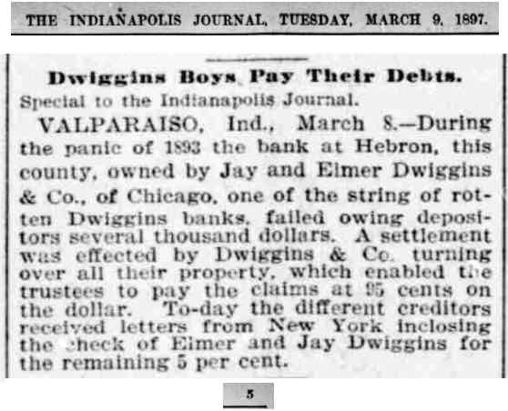
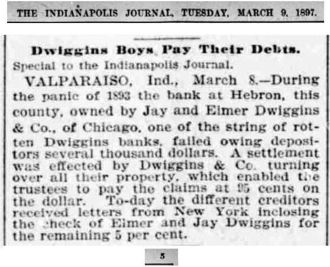

One of the few perks of being a blogger is that occasionally I get invited to an interesting event. Thursday was one such day. I attended the ceremonial groundbreaking for the new Premier BioSource facility that will raise swine for medical research.
This blog has reported some of the regulatory meetings that approved the plans needed for this facility. Most of the details of the project are in a post from January 24, 2018 with less here and here. The name of the owning company of this facility has changed. In the January meetings the owner was S&S Farms. However, that name is already used by an Indiana company, so the new name is Premier BioSource. The contractor for the buildings is Summit Livestock Facilities, and their name was on most of the signage at the groundbreaking. They are a sister company to FBI builders in Remington and design and build CAFOs throughout the county. I talked to one person with the company and he told me that they were currently building a CAFO in Arizona.
The Premier BioSource pig farm will be located in Barkley Township two or three miles directly west of the little community of Gifford. As one enters the site on a long gravel/stone road, one passes two large silos. In the past this property raised cattle and there are still structures from that past. They look old and run-down. The construction site is on a sand ridge and there is no obvious evidence that it was ever cultivated. The site is surrounded by trees and once it is built, it is unlikely that anyone who travels the adjacent roads will realize that there is a large hog farm nearby.
There were many cars already there when I arrived. Most of the people invited were associated with a related enterprise, but various public officials also attended. A tent had been erected so the audience could sit to hear several speakers and next to it food was being prepared for a lunch after the ceremony.
Here is a picture of the sign on the fence in the picture above.
People milled around and talked a while before they were directed to the seating. Jon Hoek, who is the general manager of Premier BioSource, spoke first. He introduced various members of the audience who were in some way or another associated the project, including several people from companies that use research animals. He noted that the facility is expected to employ 21 people when all the stages are finished and hourly wages will range from $15 to $25. The employees will be in transportation, animal care, and farm management. This facility will serve the eastern half of the country; the existing S&S Farm in California serves the West. He also noted that air will be filtered both going in going out of the facility.
The next speaker was Indiana's Lt Governor, Suzanne Crouch. She touted Indiana's record as a good place for agriculture and agricultural business. She hoped that this facility would aid in making Indiana a center of biomedical research.
Kendall Culp, Jasper County Commissioner and VP of the Indiana Farm Bureau, spoke next. He noted that he had opted to attend an event at a hog farm rather than attend a Trump rally in Evansville. He briefly discussed the past of the property and was one of the speakers who noted that this facility was raising animals that could one day save human lives, quite different from what other hog farms do. He also reminded the audience and the Lt Governor that Jasper County is Indiana's top agricultural producer.
The final speaker was Mark Bousema, the president of Premier BioSource. He gave brief history of how a boy from Iowa who moved to California ended up with a hog farm in Indiana. His father was not a farmer but sold shoes. He met his future wife at Dordt College in Iowa. She was from California and they moved there after college. His wife's family had a dairy farm with a few pigs, and an unexpected sow pregnancy changed his life. The litter had some runts that Mark and his wife raised. Some died, but three lived and he discovered that he liked pigs. He began to raise them on the side and eventually joined up with S&S Farms (which is named after its founders, Tom and Carl Salayer). The desire to better serve the eastern US eventually led him to Indiana and Jasper County.
After the speeches, it was time for the ceremonial groundbreaking. Thirteen people got shovels.
Here is the moment when they tossed a shovel full of dirt into the air.
After the groundbreaking, I got a chance to take a better picture of the Lt Governor. Here she is talking to Jon Hoek.
Then the Lt Governor got into a mini excavator and a man helped her dig a scoop of dirt.
I asked if I could get closer to the actual construction work that was a hundred yards or so from where the ceremony was taking place and was told it was OK.
People stayed around and talked as well as enjoyed some pulled pork sandwiches. I met several people. One worked for the Indiana Department of Agriculture. She told me that unlike many state departments of agriculture, Indiana's Department of Agriculture is not involved in regulation. Rather they try to promote agriculture. I asked if she had noticed an increase of NIMBYism. She said that she had and that a lot of it was based on misconceptions of how modern agriculture works.
Here is the press release from the Indiana Economic Development Corporation and an article from InsideIndianaBusiness.com.
In a couple of related items, the large Remington elevator has closed. It was old and apparently did not meet modern practices well. The Rensselaer Republican recently had an article about the closing. On the way north I noticed that as one approaches the bridge over the Iroquois river on US 231 there are signs that announce that on or after September 4 the road will be closed. That will disrupt travel for some people.

This blog reports events and interesting tidbits from Rensselaer, Indiana and the surrounding area.
Thursday, August 30, 2018
Tuesday, August 28, 2018
Two meetings, but mostly wind turbines
A demonstration of recording software took up about half of Monday's City Council meeting. The software (and hardware) is based on software from the same company that is used for court recording and for police interviews/interrogations. It comes with many options, including the option of live-streaming meetings. No decision about the product was made at the meeting.
The Chief of Police wanted to change some job titles. I did not understand the whole thing, which involved a promotion, but the matter will be discussed at the next Board of Public Works meeting and will come back to the Council in two weeks.
There was a discussion of planning for a future water well. The most promising sites are south of the City and the Mayor would like to secure a parcel of property for future use. The land the City is interested in is currently owned by SJC and is south and west of the existing well, close to Lake Banet if I understood the discussion. The reason for moving on this now is that the future of the SJC lands is uncertain. It seems reasonable to assume that if SJC and Farm Credit agree on a debt settlement, SJC may lose the farm land it currently owns. One interesting tidbit from the discussion: the City helped the people planning the assisted living units planned by Fountain Stone negotiate the purchase of the property from SJC.
(An aside: How did SJC come to own the land it has? That is one of many things that will be revealed on the Weston Cemetery Walk on September 22.)
There is now an excavator on the site of the proposed assisted-living apartments and lots of little flags in the field.
The Police Department is planing a open house for the new police station on September 12 at 1:30.
The meeting ended at about 7:00 and I hurried out to the Fairgrounds to see what would happen at the Plan Commission meeting. The BZA meeting had finished and I think the Plan Commission had discussed a couple of rezone requests before I got there, but I was in time for the main event, a public hearing/discussion of revisions to the wind farm ordinance. The hearing began with a presentation by Gerritt DeVries showing why he does not like wind farms, at least not in Jasper County. When it was finished two or three Board members noted that they had nothing to do with the presentation.
 When the floor was open to public comments, almost all of the people speaking were opposed to having wind turbines in Jasper County. Several speakers said they just did not like the looks of turbines. One speaker said that he would rather see his taxes go up than to see wind turbines spreading across the County. Another noted that wind turbines had adverse effects on livestock. Apparently there are sound frequencies that we do not hear but which can affect animals. There was one speaker in favor of wind turbines, a young lady from the Sierra Club who argued that coal was the thing we should fear and that wind energy was good because it reduced our need for coal. She got little support from the audience.
When the floor was open to public comments, almost all of the people speaking were opposed to having wind turbines in Jasper County. Several speakers said they just did not like the looks of turbines. One speaker said that he would rather see his taxes go up than to see wind turbines spreading across the County. Another noted that wind turbines had adverse effects on livestock. Apparently there are sound frequencies that we do not hear but which can affect animals. There was one speaker in favor of wind turbines, a young lady from the Sierra Club who argued that coal was the thing we should fear and that wind energy was good because it reduced our need for coal. She got little support from the audience.
Mr. DeVries listed some options for the Commission, one of which was to simply ban wind turbines. The audience favored that option. Mr. DeVries waited for someone to make that motion, but no one did. So he reluctantly turned to proposed changes, which he displayed on a screen for the audience.
I was surprised at how little discussion there was on the proposed changes. The Commission went through them, but not in the way that I expected. I thought that someone should have moved the entire package and then they could have moved to amend as they proceeded through. Instead as they discussed the items, some changes were made when a member or two suggested a change and no one challenged it. As they approached the end, a man from the audience objected to the way the whole meeting was being run and the Chairman pushed back. However, two members of the Board agreed with the complaint.
In the end the Commission voted to table the matter until the next meeting so they could see exactly what they were voting on.
In retrospect the Commission approached the matter backwards. They started with an amended copy of the ordinance but there were no justifications for the changes that had been suggested. It would have been better to start with just the changes and their justification and decided which of the changes they wanted to incorporate into the final document. They should have been asking questions such as: What interests of neighbors need to be protected? Should setbacks be to property lines, or to structures, or both property lines and structures and why? What is the appropriate setback to non-participating neighbors and why? Since wind turbines seem to affect livestock, what should the setbacks be for livestock operations? Should they only be for CAFOs or should smaller operations also be considered? Should the setbacks be the same for cattle as for pigs or for chickens? If setbacks are set correctly, should there be a need for other protections, such as from noise or flicker? How much protection should be granted wildlife and why? What is the justification for protecting (or restricting) participants as some of the proposals did? Much of what was changed in the proposals and in the changes to the proposals seemed arbitrary with no justification.
At least two people mentioned a poll in which more than 80% of the people opposed wind farms and suggested that that poll represented the general public. Any sample that does not have some way of randomly selecting respondents is worthless for drawing conclusions about the population. (If the opposition to wind turbines is as widespread as the opponents say it is, no wind farm will ever be built because the wind companies will not be able to find enough participants to form the blocks of land that they need.)
In a previous post I had wondered why setbacks were proposed to property lines of participating land owners. At the meeting the justification for this was that a future landowner might not want a wind turbine as a neighbor. That is a strange position for a group that claims to support property rights. Any future buyer will take into account whatever legal restrictions are on the land and pay accordingly. If the windmills do decrease property values, the person who signed the participation agreement will bear the costs when he sells.
Perhaps the most depressing moment came at the end when the Commission passed a recommendation for a moratorium on construction of wind turbines. No one mentioned that the moratorium was meaningless. Do the members of this regulatory body not understand the steps that are needed to get wind turbines built? Before any dirt is moved, the Commission itself would have to recommend that the area be classified as a wind-turbine overlay district. Jasper County has no Wind Farm overlay districts and until it declares one, no wind turbines can be built. The builder would also need permission of the County Commissioners to use the roads and there would probably be a need for drainage board approval. There are undoubtedly a variety of state regulatory hurdles that must be leapt as well.
The Chief of Police wanted to change some job titles. I did not understand the whole thing, which involved a promotion, but the matter will be discussed at the next Board of Public Works meeting and will come back to the Council in two weeks.
There was a discussion of planning for a future water well. The most promising sites are south of the City and the Mayor would like to secure a parcel of property for future use. The land the City is interested in is currently owned by SJC and is south and west of the existing well, close to Lake Banet if I understood the discussion. The reason for moving on this now is that the future of the SJC lands is uncertain. It seems reasonable to assume that if SJC and Farm Credit agree on a debt settlement, SJC may lose the farm land it currently owns. One interesting tidbit from the discussion: the City helped the people planning the assisted living units planned by Fountain Stone negotiate the purchase of the property from SJC.
(An aside: How did SJC come to own the land it has? That is one of many things that will be revealed on the Weston Cemetery Walk on September 22.)
There is now an excavator on the site of the proposed assisted-living apartments and lots of little flags in the field.
The Police Department is planing a open house for the new police station on September 12 at 1:30.
The meeting ended at about 7:00 and I hurried out to the Fairgrounds to see what would happen at the Plan Commission meeting. The BZA meeting had finished and I think the Plan Commission had discussed a couple of rezone requests before I got there, but I was in time for the main event, a public hearing/discussion of revisions to the wind farm ordinance. The hearing began with a presentation by Gerritt DeVries showing why he does not like wind farms, at least not in Jasper County. When it was finished two or three Board members noted that they had nothing to do with the presentation.
Mr. DeVries listed some options for the Commission, one of which was to simply ban wind turbines. The audience favored that option. Mr. DeVries waited for someone to make that motion, but no one did. So he reluctantly turned to proposed changes, which he displayed on a screen for the audience.
I was surprised at how little discussion there was on the proposed changes. The Commission went through them, but not in the way that I expected. I thought that someone should have moved the entire package and then they could have moved to amend as they proceeded through. Instead as they discussed the items, some changes were made when a member or two suggested a change and no one challenged it. As they approached the end, a man from the audience objected to the way the whole meeting was being run and the Chairman pushed back. However, two members of the Board agreed with the complaint.
In the end the Commission voted to table the matter until the next meeting so they could see exactly what they were voting on.
In retrospect the Commission approached the matter backwards. They started with an amended copy of the ordinance but there were no justifications for the changes that had been suggested. It would have been better to start with just the changes and their justification and decided which of the changes they wanted to incorporate into the final document. They should have been asking questions such as: What interests of neighbors need to be protected? Should setbacks be to property lines, or to structures, or both property lines and structures and why? What is the appropriate setback to non-participating neighbors and why? Since wind turbines seem to affect livestock, what should the setbacks be for livestock operations? Should they only be for CAFOs or should smaller operations also be considered? Should the setbacks be the same for cattle as for pigs or for chickens? If setbacks are set correctly, should there be a need for other protections, such as from noise or flicker? How much protection should be granted wildlife and why? What is the justification for protecting (or restricting) participants as some of the proposals did? Much of what was changed in the proposals and in the changes to the proposals seemed arbitrary with no justification.
At least two people mentioned a poll in which more than 80% of the people opposed wind farms and suggested that that poll represented the general public. Any sample that does not have some way of randomly selecting respondents is worthless for drawing conclusions about the population. (If the opposition to wind turbines is as widespread as the opponents say it is, no wind farm will ever be built because the wind companies will not be able to find enough participants to form the blocks of land that they need.)
In a previous post I had wondered why setbacks were proposed to property lines of participating land owners. At the meeting the justification for this was that a future landowner might not want a wind turbine as a neighbor. That is a strange position for a group that claims to support property rights. Any future buyer will take into account whatever legal restrictions are on the land and pay accordingly. If the windmills do decrease property values, the person who signed the participation agreement will bear the costs when he sells.
Perhaps the most depressing moment came at the end when the Commission passed a recommendation for a moratorium on construction of wind turbines. No one mentioned that the moratorium was meaningless. Do the members of this regulatory body not understand the steps that are needed to get wind turbines built? Before any dirt is moved, the Commission itself would have to recommend that the area be classified as a wind-turbine overlay district. Jasper County has no Wind Farm overlay districts and until it declares one, no wind turbines can be built. The builder would also need permission of the County Commissioners to use the roads and there would probably be a need for drainage board approval. There are undoubtedly a variety of state regulatory hurdles that must be leapt as well.
Friday, August 24, 2018
Budget meetings
The County Council held its annual budget meetings this week. On Tuesday night they heard from weed control, the Coroner, and the sheriff's department. Weed control mostly suppresses marijuana that grows in the County but also does a bit with Canadian thistle and Palmer amaranth.
The Sheriff's Department has seven different budgets, including the jail budget, 911, and public safety. The Sheriff made a case for adding a second resource officer for the KV school system. (The Rensselaer Republican reports on this in depth.) He also again expressed his concern that the current pay and retirement packages encourage officers to resign after twenty years, which means that new officers must be hired and go through training and be equipped, both very expensive.
The remainder of Tuesday's meeting took up additional appropriations for this year, including requests for Animal Control, Planning and Development Board members, Community Corrections, Veterans Affairs, and Drainage Board.
My interest in blogging is not great enough to motivate me to attend the full budget hearings though undoubtedly there are many interesting facts that come out during the proceedings. However, I went back on Wednesday afternoon to provide moral support for one on the presenters. The Council heard from a variety of agencies, including Animal Control, Emergency Preparedness, the Assessor, and the Highway Department. It also heard from Commissioner Culp. The most interesting part of his presentation was a discussion of health insurance costs. The County spends $3.7 million each year for insurance, most or all for health insurance. That works out to the equivalent of $15 per hour per employee.
In other news, work on the Mt Calvary intersection south of town is not finished but currently no work is being done there.
CDC Resources is having a rummage sale today and tomorrow. The items on sale came from the various collection boxes they had in Jasper and Newton Counties. They have pulled most of the boxes--sales at the Monticello thrift store cannot keep up with donations. (This may be a result of the improved economy—people shop less at thrift stores and are more willing to donate used items.) I was impressed with the quality of the items for sale and was told they did some culling before the sale. It would be nice to again have a CDC thrift store locally.
I have seen several corn fields that have already been harvested. The recent rains have made the grass grow again, which means we will have to mow more.
The Sheriff's Department has seven different budgets, including the jail budget, 911, and public safety. The Sheriff made a case for adding a second resource officer for the KV school system. (The Rensselaer Republican reports on this in depth.) He also again expressed his concern that the current pay and retirement packages encourage officers to resign after twenty years, which means that new officers must be hired and go through training and be equipped, both very expensive.
The remainder of Tuesday's meeting took up additional appropriations for this year, including requests for Animal Control, Planning and Development Board members, Community Corrections, Veterans Affairs, and Drainage Board.
My interest in blogging is not great enough to motivate me to attend the full budget hearings though undoubtedly there are many interesting facts that come out during the proceedings. However, I went back on Wednesday afternoon to provide moral support for one on the presenters. The Council heard from a variety of agencies, including Animal Control, Emergency Preparedness, the Assessor, and the Highway Department. It also heard from Commissioner Culp. The most interesting part of his presentation was a discussion of health insurance costs. The County spends $3.7 million each year for insurance, most or all for health insurance. That works out to the equivalent of $15 per hour per employee.
In other news, work on the Mt Calvary intersection south of town is not finished but currently no work is being done there.
CDC Resources is having a rummage sale today and tomorrow. The items on sale came from the various collection boxes they had in Jasper and Newton Counties. They have pulled most of the boxes--sales at the Monticello thrift store cannot keep up with donations. (This may be a result of the improved economy—people shop less at thrift stores and are more willing to donate used items.) I was impressed with the quality of the items for sale and was told they did some culling before the sale. It would be nice to again have a CDC thrift store locally.
I have seen several corn fields that have already been harvested. The recent rains have made the grass grow again, which means we will have to mow more.
Monday, August 20, 2018
Proposed changes to the wind farm ordinance (long)
The Jasper County Plan Commission is expecting a big turnout at its next meeting, scheduled to be held next Monday at the Fairgrounds rather than the Court House. On the agenda is a discussion of revisions to the Unified Development Ordinance (UDO) regarding windmills. The windmill part of the UDO was revised in November so it was a surprise to see the item back up for discussion. I heard that those who oppose wind farms were the source of the changes, which are being brought to the Commission by its chairman, Gerrit DeVries.
I stopped by the County Planning office to see what changes were being proposed. I got a ten pages document with the existing ordinance and proposed changes. In looking at the changes, my past life with economics intruded. Economists like things that increase value and dislike things that decrease value. When we make decisions for ourselves, we try to do so in ways that increase value, so if we spend $10 to buy a product, we are acting as if all other possible uses of that $10 have less value to us. However, there are cases in which costs of an action are not taken into account but rather passed on to other people. These situations involve what economists have named "externalities" and they are the primary justification for zoning and other restrictions on land use. Another possible justification of regulation is to protect people from themselves, but many and perhaps most economists have dislike paternalism justifications.
With that in mind, let us see what changes are proposed. There are a lot of them, so this is a long post.
20.30.140
The old language says that the overlay district is to be applied to A1 and A2 districts. The proposal eliminates A1 and A2 and substitutes A3. A3 is intensive agriculture and is mostly used for CAFOs. I do not think this change was thought out. It suggests that thousands of acres would have to be A3 for a wind farm.
A new section is added: D. Special Exception: "The application for the WFO District to any lot does not relieve the requirement for a Special Exception for each utility-grade wind turbine location." What is the point of the rest of the section if this is included?
20.30.170
New section: "B 4. Top Soil Preservation Plan: There shall be an installation plan approved by the Zoning Administrator that adequately preserves and provides for the restoration of topsoil for all staging and construction activities." I do not see externalities involved here. Why should the individual land owners be responsible for making sure that this is included in any contracts they sign? In a letter to the editor of the Rensselaer Republican arguing for the proposed changes, three concerned citizens of Jasper County state, “We are not trying to tell anyone what they can or cannot do with their property, as long as what they doesn’t infringe on our own property rights.” This provision does tell people what they can or cannot do with their property even though it does not infringe on other's property rights.
There are a lot of changes in setbacks, 2030.170 I. Setbacks are justified by externalities. The proper setback distances should be determined by studies and analysis of how much surrounding landowners are affected. The distances are not something that economics can say much about.
2030.170 I 2 a. Setback from property lines: "a.... minimum of one and one-half times the hub height of the turbine from any property line of a participating landowner and a non on-site, above ground utility and each utility grade wind turbine system shall be located the greater of 2640 feet or six and one-half (6.5) times the hub hight of the turbine from any non-participating property line." I do not see why there should be any setback required from the property line of a participating landowner. They have signed a contract with the wind-turbine operator, so there are no external effects here. Further, the next section seem to directly contradict the restriction on setbacks to property lines of participating landowners: "Utility-grade wind turbines within a wind farm may encroach into property line setbacks between two (2) participating owner's properties."
c. Changes setbacks for on-site buildings. (I am not sure why these setbacks are in the existing code--there seems to be no external effects. If I want a wind turbine next to my house, why should I not be allowed to have one there?) The proposal changes language from tip-of-the-blade height to the hub height and it is not clear to me what the effect of that is.
d. Setbacks from Off-Site Land Use. There are multiple sections here and some big changes.
d i. The minimum setback to an existing residential dwelling is changed from 1000 feet to 1 mile. The change adds that the dwelling be non-participating. It strikes out the following: "The owner of an existing, neighboring single-family dwelling unit may grant permission, in writing or recorded with the Jasper County Recorder, waiving the setback requirement to their home. However, under no circumstances shall a utility grade wind turbine system be closer than 1.1 times the tip height to a single family dwelling." At the presentation on wind farms at the June Plan Commission meeting, speaker Kevon Martis argued for long setbacks but said that people within the setbacks should be allowed to grant waivers. Striking this passage seems to be contrary to the approach he advocated, and he was a speaker invited by those critical of wind farms. Maybe the thought behind the change is that any such users should become participating land owners.
d ii. Changes 1000 feet to 1 mile for land zoned for residential or institution use.
d iii. Changes 1320 feet to 1 mile for land platted for a subdivision and strikes the qualifier "with ten (10) or more lots."
Adds d iiii. "A minimum of 1,000 feet from any non-participating private tile of [sic] drain.
Adds d v. "A minimum of two (2) miles from the Iroquois and Kankakee rivers."
Adds d vi. "A minimum of three and one-half (3.5) miles from any existing Confined Animal Feeding Operation."
f. Existing language sets a no-turbine zone for the Jasper-Pulaski Fish and Wildlife area as north of CR 400N and east of CR 100W. The proposed changes set a setback of 6 miles from any public conservation lands. (The existing setbacks were set in April, 2016.)
In section K 1. Noise. The existing code sets a limit of 60 decibels modeled to a residence. The proposal changes that to 35 decibels at the property line.
New Section k 6. "Shadow Flicker: "The flickering effect caused by a Federal Aviation Administration (FAA) required signal light or sunlight combined with the turning of the rotor shaft shall not be permitted on an off-site, non-participating property." Does that mean if one can see the signal lights, the turbine is in violation?
Section O Drainage
1. Requires that any drainage within 1000 feet of any wind turbine location or construction activities be inspected and scoped prior to and after installation, with expense born by operator.
Section P
2 Some minor changes to road planning and usage.
Section Q. A new addition:
"7. Surety for Damages Related to Decommissioning. The operator of any utility-grade wind turbine shall secure and provide a performance bond or submit and escrow deposit in the amount of 1,000,000 per turbine to endure [sic] the proper decommissioning and removal of the turbine, as well as restoration of top soil prior to installation."
Meanwhile, Benton and White Counties continue adding turbines with little or no public discontent. The latest addition to the Meadow Lake Wind Farm will have turbines that reach 570 feet. It was highlighted in Saturday's Rensselaer Republican.
Property rights are society's way of regulating usage of property. They come with restrictions and those restrictions often are due to externalities. Externalities work both ways. If we give people living in the countryside the right to erect tall wind turbines, we infringe on the perceived rights of neighbors to quiet, scenic views, and whatever other damages they believe the existence of wind turbines causes them. However, if we give the neighbors the right to quiet, scenic views and avoidance of other problems caused by wind turbines, we infringe on the perceived rights of those who want to erect wind turbines on their property. Economist Ronald Coase won a Nobel prize in large part for realizing in the imaginary world in which negotiation and transactions were costless, it would not matter how those property rights were allocated in deciding whether the wind turbines were built or not.
I stopped by the County Planning office to see what changes were being proposed. I got a ten pages document with the existing ordinance and proposed changes. In looking at the changes, my past life with economics intruded. Economists like things that increase value and dislike things that decrease value. When we make decisions for ourselves, we try to do so in ways that increase value, so if we spend $10 to buy a product, we are acting as if all other possible uses of that $10 have less value to us. However, there are cases in which costs of an action are not taken into account but rather passed on to other people. These situations involve what economists have named "externalities" and they are the primary justification for zoning and other restrictions on land use. Another possible justification of regulation is to protect people from themselves, but many and perhaps most economists have dislike paternalism justifications.
With that in mind, let us see what changes are proposed. There are a lot of them, so this is a long post.
20.30.140
The old language says that the overlay district is to be applied to A1 and A2 districts. The proposal eliminates A1 and A2 and substitutes A3. A3 is intensive agriculture and is mostly used for CAFOs. I do not think this change was thought out. It suggests that thousands of acres would have to be A3 for a wind farm.
A new section is added: D. Special Exception: "The application for the WFO District to any lot does not relieve the requirement for a Special Exception for each utility-grade wind turbine location." What is the point of the rest of the section if this is included?
20.30.170
New section: "B 4. Top Soil Preservation Plan: There shall be an installation plan approved by the Zoning Administrator that adequately preserves and provides for the restoration of topsoil for all staging and construction activities." I do not see externalities involved here. Why should the individual land owners be responsible for making sure that this is included in any contracts they sign? In a letter to the editor of the Rensselaer Republican arguing for the proposed changes, three concerned citizens of Jasper County state, “We are not trying to tell anyone what they can or cannot do with their property, as long as what they doesn’t infringe on our own property rights.” This provision does tell people what they can or cannot do with their property even though it does not infringe on other's property rights.
There are a lot of changes in setbacks, 2030.170 I. Setbacks are justified by externalities. The proper setback distances should be determined by studies and analysis of how much surrounding landowners are affected. The distances are not something that economics can say much about.
2030.170 I 2 a. Setback from property lines: "a.... minimum of one and one-half times the hub height of the turbine from any property line of a participating landowner and a non on-site, above ground utility and each utility grade wind turbine system shall be located the greater of 2640 feet or six and one-half (6.5) times the hub hight of the turbine from any non-participating property line." I do not see why there should be any setback required from the property line of a participating landowner. They have signed a contract with the wind-turbine operator, so there are no external effects here. Further, the next section seem to directly contradict the restriction on setbacks to property lines of participating landowners: "Utility-grade wind turbines within a wind farm may encroach into property line setbacks between two (2) participating owner's properties."
c. Changes setbacks for on-site buildings. (I am not sure why these setbacks are in the existing code--there seems to be no external effects. If I want a wind turbine next to my house, why should I not be allowed to have one there?) The proposal changes language from tip-of-the-blade height to the hub height and it is not clear to me what the effect of that is.
d. Setbacks from Off-Site Land Use. There are multiple sections here and some big changes.
d i. The minimum setback to an existing residential dwelling is changed from 1000 feet to 1 mile. The change adds that the dwelling be non-participating. It strikes out the following: "The owner of an existing, neighboring single-family dwelling unit may grant permission, in writing or recorded with the Jasper County Recorder, waiving the setback requirement to their home. However, under no circumstances shall a utility grade wind turbine system be closer than 1.1 times the tip height to a single family dwelling." At the presentation on wind farms at the June Plan Commission meeting, speaker Kevon Martis argued for long setbacks but said that people within the setbacks should be allowed to grant waivers. Striking this passage seems to be contrary to the approach he advocated, and he was a speaker invited by those critical of wind farms. Maybe the thought behind the change is that any such users should become participating land owners.
d ii. Changes 1000 feet to 1 mile for land zoned for residential or institution use.
d iii. Changes 1320 feet to 1 mile for land platted for a subdivision and strikes the qualifier "with ten (10) or more lots."
Adds d iiii. "A minimum of 1,000 feet from any non-participating private tile of [sic] drain.
Adds d v. "A minimum of two (2) miles from the Iroquois and Kankakee rivers."
Adds d vi. "A minimum of three and one-half (3.5) miles from any existing Confined Animal Feeding Operation."
f. Existing language sets a no-turbine zone for the Jasper-Pulaski Fish and Wildlife area as north of CR 400N and east of CR 100W. The proposed changes set a setback of 6 miles from any public conservation lands. (The existing setbacks were set in April, 2016.)
In section K 1. Noise. The existing code sets a limit of 60 decibels modeled to a residence. The proposal changes that to 35 decibels at the property line.
New Section k 6. "Shadow Flicker: "The flickering effect caused by a Federal Aviation Administration (FAA) required signal light or sunlight combined with the turning of the rotor shaft shall not be permitted on an off-site, non-participating property." Does that mean if one can see the signal lights, the turbine is in violation?
Section O Drainage
1. Requires that any drainage within 1000 feet of any wind turbine location or construction activities be inspected and scoped prior to and after installation, with expense born by operator.
Section P
2 Some minor changes to road planning and usage.
Section Q. A new addition:
"7. Surety for Damages Related to Decommissioning. The operator of any utility-grade wind turbine shall secure and provide a performance bond or submit and escrow deposit in the amount of 1,000,000 per turbine to endure [sic] the proper decommissioning and removal of the turbine, as well as restoration of top soil prior to installation."
Meanwhile, Benton and White Counties continue adding turbines with little or no public discontent. The latest addition to the Meadow Lake Wind Farm will have turbines that reach 570 feet. It was highlighted in Saturday's Rensselaer Republican.
Property rights are society's way of regulating usage of property. They come with restrictions and those restrictions often are due to externalities. Externalities work both ways. If we give people living in the countryside the right to erect tall wind turbines, we infringe on the perceived rights of neighbors to quiet, scenic views, and whatever other damages they believe the existence of wind turbines causes them. However, if we give the neighbors the right to quiet, scenic views and avoidance of other problems caused by wind turbines, we infringe on the perceived rights of those who want to erect wind turbines on their property. Economist Ronald Coase won a Nobel prize in large part for realizing in the imaginary world in which negotiation and transactions were costless, it would not matter how those property rights were allocated in deciding whether the wind turbines were built or not.
Thursday, August 16, 2018
A couple of unexpected meetings
The Rensselaer City Council held a special meeting on Wednesday at 4:00 to discuss budget items. The amount of money that they can expect in taxes has been given to the City by the State and it is less than it was last year. (Perhaps this decrease reflects the effects on the local economy of the closing of Saint Joseph's College.) After reworking the budget a number of times, the Mayor the Clerk/Treasurer came up with a budget that has a deficit of about $130,000. The Mayor thinks that at the end of the year there will be enough unspent money in this year's budget to cover that deficit. Health insurance is rising by 8.5%, which is less than expected.
As part of the budget, the mayor proposed a 3% across-the-board increase in wages for full-time employees. Rick Odle wanted to know what the dollar amount of that increase was and that information was not available. He expressed frustration at being asked to approve a budget when the numbers needed for him to make a sound decision were not available. George Cover moved that instead of a 3% raise, the raise be 2.5%. Eventually that proposal was passed with one nay vote even though no one knew how much of an impact that would have on the $130,000 shortfall.
As they were ready to adjourn, Claude Grow, superintendent of the power plant, mentioned a letter he had sent to the Council arguing that his workers were being paid about $5 less than workers doing similar work at other municipalities and private companies. He also said that they were below what City linemen were making. The Council discussed the wages but declined to act on his concerns at this meeting.
As the Council was again getting ready to adjourn, someone pointed out that they had not voted on the cuts in the proposed budget. They did so and then adjourned.
This is not the end of budgeting. The budget now goes to the State where it will be approved or more likely changed.
The Board of Public Works was scheduled to meet on Monday before the City Council meeting but did not because it lacked a quorum. Instead it met on Thursday afternoon. It approved payments to Commonwealth Engineering for its work on recent paving and the water-well project. It also approved a promotion of Police Corporal White to Sergeant. It briefly discussed a proposed contract revision between the City Fire Department and the Marion Township Trustee. The current contract dates from 1997. Some of the equipment was purchased and is owned by the City and some (most) was purchased and owned by the Township. The two entities have worked together to provide fire protection not just to Rensselaer and Marion Township but several other townships as well. The biggest change in the proposed contract would be that the Township Trustee would move his office to the Fire Station. The Fire Chief said that the advantage of this to the City is that the Station would have a human presence two days a week and also that the Trustee's secretary could do some of the paper work for the Fire Department. There was some question about what would happen to a small payment that the Trustee makes to the City and that needs to addressed before the Board gives the contract approval.
The spray-paint artist who did the mural on the Embers building is back in Indiana working in Lafayette. He paid a visit to Rensselaer in the last day or two and left a small painting on the old carriage house on the alley behind Fenwick Farms Brewery. When I stopped to snap a picture, there were three young people there and they were posing a young girl in front of the butterfly. It makes for a wonderful backdrop and gives the person posing butterfly wings.
As part of the budget, the mayor proposed a 3% across-the-board increase in wages for full-time employees. Rick Odle wanted to know what the dollar amount of that increase was and that information was not available. He expressed frustration at being asked to approve a budget when the numbers needed for him to make a sound decision were not available. George Cover moved that instead of a 3% raise, the raise be 2.5%. Eventually that proposal was passed with one nay vote even though no one knew how much of an impact that would have on the $130,000 shortfall.
As they were ready to adjourn, Claude Grow, superintendent of the power plant, mentioned a letter he had sent to the Council arguing that his workers were being paid about $5 less than workers doing similar work at other municipalities and private companies. He also said that they were below what City linemen were making. The Council discussed the wages but declined to act on his concerns at this meeting.
As the Council was again getting ready to adjourn, someone pointed out that they had not voted on the cuts in the proposed budget. They did so and then adjourned.
This is not the end of budgeting. The budget now goes to the State where it will be approved or more likely changed.
The Board of Public Works was scheduled to meet on Monday before the City Council meeting but did not because it lacked a quorum. Instead it met on Thursday afternoon. It approved payments to Commonwealth Engineering for its work on recent paving and the water-well project. It also approved a promotion of Police Corporal White to Sergeant. It briefly discussed a proposed contract revision between the City Fire Department and the Marion Township Trustee. The current contract dates from 1997. Some of the equipment was purchased and is owned by the City and some (most) was purchased and owned by the Township. The two entities have worked together to provide fire protection not just to Rensselaer and Marion Township but several other townships as well. The biggest change in the proposed contract would be that the Township Trustee would move his office to the Fire Station. The Fire Chief said that the advantage of this to the City is that the Station would have a human presence two days a week and also that the Trustee's secretary could do some of the paper work for the Fire Department. There was some question about what would happen to a small payment that the Trustee makes to the City and that needs to addressed before the Board gives the contract approval.
The spray-paint artist who did the mural on the Embers building is back in Indiana working in Lafayette. He paid a visit to Rensselaer in the last day or two and left a small painting on the old carriage house on the alley behind Fenwick Farms Brewery. When I stopped to snap a picture, there were three young people there and they were posing a young girl in front of the butterfly. It makes for a wonderful backdrop and gives the person posing butterfly wings.
Tuesday, August 14, 2018
City Council meeting and other items of interest
August's first City Council meeting took place Monday evening. There were a lot of little items discussed.
The Council approved four street closings, including Van Rensselaer for OktoberFest on September 22. Two closings were for weddings and another was for St. Augustine's on the 26th. The Council also gave the SJC Alumni Association permission to serve alcohol at Brookside Park for the Homecoming celebration.
The gas tracker for August is a two cent decrease. Weston Cemetery was given permission to hire someone part time to digitized records. The Council agreed to a demonstration at its next meeting of recording software that would, among other things, allow its meetings to be broadcast on the Internet.
The Council agreed to release funds that were obtained by the sale of the old Admin Building at what was the Monnett school to be used for construction of park projects. The Parks for People campaign would like to start some construction this fall on soccer fields, a walking trail, and new basketball courts.
There followed a long discussion of how to re-imburse an employee who paid for an airline ticket with a personal credit card rather than a city credit card. I could not follow some of the discussion, but there was frequent mention of the State Board of Accounts and their regulations.
Approval was given to replace the furnace/air conditioner that sits on the roof of City Hall above the Mayor's office. The Council also approved August 31 as a City Holiday. In superintendents' reports there were several mentions of how City employees enjoyed the City Employee Picnic held on Saturday. Kevin Cochran, Superintendent of Weston Cemetery, announced that tickets were now on sale for the cemetery walk to be held September 22. Tickets are $10 for adults and $5 for children and are available at Jordans, Willow Switch, and Browns Garden Shop. The event is sponsored by the Jasper County Historical Society.
The City has finished re-routing the drainage tile that previously went under the land on which the new solar parks sits. Construction of the solar panels and related equipment should be completed about the middle of September. The new well house for the Sparling Avenue well has been delayed and also should be installed about the middle of September. The Police Department moved into its newly-remodeled building last Tuesday. There are a few issues still being worked out. There are no plans yet of what to do with the old space they occupied next to City Hall. There may be an open house for the new space sometime in the future.
In other news, work on the US 231/Mt Calvary Rd intersection continues. The road has been shifted to the east but there is still some paving to do and it is not yet clear what the west side of the road will look like. Below are pictures from Monday.
 Above, looking to the north from south of the intersection. Below, looking to the south from north of the intersection.
Above, looking to the north from south of the intersection. Below, looking to the south from north of the intersection.
 There was an insightful update on what is happening at SJC on Facebook. Read it here. It appears that there is no future for Halleck Center.
There was an insightful update on what is happening at SJC on Facebook. Read it here. It appears that there is no future for Halleck Center.
The swimming pool held its last public opening on Sunday. The White House B&B plans to close as of September 1. Unique Finds is reopening Wednesday in its old Van Rensselaer Street location.
Rensselaer had a heavy but short downpour on Friday. My rain gauge said we got more than an inch. I saw the dark clouds approaching as I drove west on Friday and when I got back to Rensselaer a few hours later, the rain had moved to the east.
Finally, I found an observation from the Pulaski County Community Development Commission interesting. Rural counties have to work to keep from eroding away and declining.
The Council approved four street closings, including Van Rensselaer for OktoberFest on September 22. Two closings were for weddings and another was for St. Augustine's on the 26th. The Council also gave the SJC Alumni Association permission to serve alcohol at Brookside Park for the Homecoming celebration.
The gas tracker for August is a two cent decrease. Weston Cemetery was given permission to hire someone part time to digitized records. The Council agreed to a demonstration at its next meeting of recording software that would, among other things, allow its meetings to be broadcast on the Internet.
The Council agreed to release funds that were obtained by the sale of the old Admin Building at what was the Monnett school to be used for construction of park projects. The Parks for People campaign would like to start some construction this fall on soccer fields, a walking trail, and new basketball courts.
There followed a long discussion of how to re-imburse an employee who paid for an airline ticket with a personal credit card rather than a city credit card. I could not follow some of the discussion, but there was frequent mention of the State Board of Accounts and their regulations.
Approval was given to replace the furnace/air conditioner that sits on the roof of City Hall above the Mayor's office. The Council also approved August 31 as a City Holiday. In superintendents' reports there were several mentions of how City employees enjoyed the City Employee Picnic held on Saturday. Kevin Cochran, Superintendent of Weston Cemetery, announced that tickets were now on sale for the cemetery walk to be held September 22. Tickets are $10 for adults and $5 for children and are available at Jordans, Willow Switch, and Browns Garden Shop. The event is sponsored by the Jasper County Historical Society.
The City has finished re-routing the drainage tile that previously went under the land on which the new solar parks sits. Construction of the solar panels and related equipment should be completed about the middle of September. The new well house for the Sparling Avenue well has been delayed and also should be installed about the middle of September. The Police Department moved into its newly-remodeled building last Tuesday. There are a few issues still being worked out. There are no plans yet of what to do with the old space they occupied next to City Hall. There may be an open house for the new space sometime in the future.
In other news, work on the US 231/Mt Calvary Rd intersection continues. The road has been shifted to the east but there is still some paving to do and it is not yet clear what the west side of the road will look like. Below are pictures from Monday.


The swimming pool held its last public opening on Sunday. The White House B&B plans to close as of September 1. Unique Finds is reopening Wednesday in its old Van Rensselaer Street location.
Rensselaer had a heavy but short downpour on Friday. My rain gauge said we got more than an inch. I saw the dark clouds approaching as I drove west on Friday and when I got back to Rensselaer a few hours later, the rain had moved to the east.
Finally, I found an observation from the Pulaski County Community Development Commission interesting. Rural counties have to work to keep from eroding away and declining.
Tuesday, August 7, 2018
Meetings 8-6-2018
The Commissioners met for their August meeting on Monday. After the usual preliminaries, they heard a presentation from their voting machine vendor about an electronic replacement for the paper poll book, the book that precinct workers use to check in voters for elections. Besides making the process easier for the Clerk's office, the device would make audits of contested elections easier to handle. 43 Indiana counties already use the device, which is based on iPad hardware.
They next took up UDO changes. The Commissioners had sent a proposal for changes to the Plan Commission several months ago. The Plan Commission had made changes to that and sent it back to the Commissioners for approval. The Commissioners had suggested changes to what the Plan Commission had sent them, and at its last meeting, the Plan Commission had rejected those changes. After some discussion about what the Plan Commission had done and what the options were for the Commissioners, the Commissioners decided to start the process anew by sending a slightly revised version of what the Plan Commission had recommended back to the Commission for its review. Two rezone requests that had been recommended by the Plan Commission at its last meeting were then approved.
The Recorder's Office wants to purchase services from a company that will allow the public to search, view, and print Recorder documents. There is a charge for using the services that is borne by the searcher, not by the Recorder's office and the software should reduce the support work for the staff of the office. The Commissioners approved the request. The next step will be to have a contract drawn up and have that approved. The Commissioners also approved a separate contract with the same company for a product that watermarks digital copies.
The Sheriff received permission to replace a Court House security officer. He expressed concern about the way that Trane, contracted to insulate the jail, wanted to do their work. The new squad cars that had been ordered some time ago have arrived and the sheriff wanted to know if the County Highway Department could use one of the vehicles that they were replacing. It can. Two or three old squad cars will be available at the next County auction.
Animal control wanted approval of use of donation funds to purchase a used van. The truck that they are using does not have enough space for equipment and cages. That was approved.
A variety of conference requests were approved. It was mentioned that the County IT guy will be leaving in September.
Before they went into executive session (to discuss insurance??) a boy thanked the Commissioners for buying his 4H goat at the County Fair.
The executive session lasted for more than an hour and fifteen minutes. There were still county highway issues to be discussed and I do not know when they got to that discussion. The State collects money from an increase in the gas tax and a fee on license plates to fund county roads, but it does not simply return that money to the counties for them to use as they see fit. Rather it is returned in a complex and ever-changing process of grants. The County and the Commissioners spend a lot of time making sure they get everything right so they can get those funds, but listening to the discussion is boring beyond belief.
I skipped the Drainage Board meeting. The most interesting item on its agenda seemed to be the drainage plans for a new Wheatfield Township Fire Station. Instead I want to a planning meeting for the upcoming Weston Cemetery Walking Tour to be held on September 22. (I am on the committee—the meetings are not open to the public.) Tickets have been printed ($10 for adults and $5 for 12 & under.) If you are interested, I advise you to purchase quickly. The announcement that the Historical Society posted on Facebook last week went viral, with close to 11,000 views. There are a limited number of people the tour can handle and it is possible that the event will sell out.

In the evening the Rensselaer Park Board met. The Parks for People campaign has receipts and pledges of $1.2 million and would like to start some of the proposed projects this fall. Included in the list are the dog park and improvements to the Staddon/Monnett property. Those improvement include new soccer fields, an entry way off College, and basketball courts. Ball fields at Brookside will wait until next spring.
Larue Pool will close Thursday and Friday, then be open for the weekend, and then close for the season for swimming. Lifeguards are returning to school and are not available to staff even on weekends.
Heather Hall, who was in charge of park programs this summer, gave a report on four programs she led this past spring and summer. Spring Fling (replacing Earth Day) had bad weather and very few people attending. Park Pop or Hop in honor of National Trails Day had only a few walkers. The STEAM (Science, Technology, Engineering, Arts, and Math) Camp met on several Thursdays and had 103 kids participating. Kids Camp, a four-day day camp, had 21 kids. Still to come is a walking club and the Harvest Fest (October 18, Thursday evening before Fall Break). Harvest Fest is an expanded Riley Read and last year had an huge number of people attending.
The next Park Board meeting will be Tuesday, September 4 at 6:00 pm.
Workers are now paving at the US 231/Mt Calvary Road intersection.
NITCO had a customer-appreciation day on Tuesday. They devoted a lot of manpower to it.
They next took up UDO changes. The Commissioners had sent a proposal for changes to the Plan Commission several months ago. The Plan Commission had made changes to that and sent it back to the Commissioners for approval. The Commissioners had suggested changes to what the Plan Commission had sent them, and at its last meeting, the Plan Commission had rejected those changes. After some discussion about what the Plan Commission had done and what the options were for the Commissioners, the Commissioners decided to start the process anew by sending a slightly revised version of what the Plan Commission had recommended back to the Commission for its review. Two rezone requests that had been recommended by the Plan Commission at its last meeting were then approved.
The Recorder's Office wants to purchase services from a company that will allow the public to search, view, and print Recorder documents. There is a charge for using the services that is borne by the searcher, not by the Recorder's office and the software should reduce the support work for the staff of the office. The Commissioners approved the request. The next step will be to have a contract drawn up and have that approved. The Commissioners also approved a separate contract with the same company for a product that watermarks digital copies.
The Sheriff received permission to replace a Court House security officer. He expressed concern about the way that Trane, contracted to insulate the jail, wanted to do their work. The new squad cars that had been ordered some time ago have arrived and the sheriff wanted to know if the County Highway Department could use one of the vehicles that they were replacing. It can. Two or three old squad cars will be available at the next County auction.
Animal control wanted approval of use of donation funds to purchase a used van. The truck that they are using does not have enough space for equipment and cages. That was approved.
A variety of conference requests were approved. It was mentioned that the County IT guy will be leaving in September.
Before they went into executive session (to discuss insurance??) a boy thanked the Commissioners for buying his 4H goat at the County Fair.
The executive session lasted for more than an hour and fifteen minutes. There were still county highway issues to be discussed and I do not know when they got to that discussion. The State collects money from an increase in the gas tax and a fee on license plates to fund county roads, but it does not simply return that money to the counties for them to use as they see fit. Rather it is returned in a complex and ever-changing process of grants. The County and the Commissioners spend a lot of time making sure they get everything right so they can get those funds, but listening to the discussion is boring beyond belief.
I skipped the Drainage Board meeting. The most interesting item on its agenda seemed to be the drainage plans for a new Wheatfield Township Fire Station. Instead I want to a planning meeting for the upcoming Weston Cemetery Walking Tour to be held on September 22. (I am on the committee—the meetings are not open to the public.) Tickets have been printed ($10 for adults and $5 for 12 & under.) If you are interested, I advise you to purchase quickly. The announcement that the Historical Society posted on Facebook last week went viral, with close to 11,000 views. There are a limited number of people the tour can handle and it is possible that the event will sell out.

In the evening the Rensselaer Park Board met. The Parks for People campaign has receipts and pledges of $1.2 million and would like to start some of the proposed projects this fall. Included in the list are the dog park and improvements to the Staddon/Monnett property. Those improvement include new soccer fields, an entry way off College, and basketball courts. Ball fields at Brookside will wait until next spring.
Larue Pool will close Thursday and Friday, then be open for the weekend, and then close for the season for swimming. Lifeguards are returning to school and are not available to staff even on weekends.
Heather Hall, who was in charge of park programs this summer, gave a report on four programs she led this past spring and summer. Spring Fling (replacing Earth Day) had bad weather and very few people attending. Park Pop or Hop in honor of National Trails Day had only a few walkers. The STEAM (Science, Technology, Engineering, Arts, and Math) Camp met on several Thursdays and had 103 kids participating. Kids Camp, a four-day day camp, had 21 kids. Still to come is a walking club and the Harvest Fest (October 18, Thursday evening before Fall Break). Harvest Fest is an expanded Riley Read and last year had an huge number of people attending.
The next Park Board meeting will be Tuesday, September 4 at 6:00 pm.
Workers are now paving at the US 231/Mt Calvary Road intersection.
NITCO had a customer-appreciation day on Tuesday. They devoted a lot of manpower to it.
Monday, August 6, 2018
Annie Get Your Gun
The 41st production of the Carnegie Players, which finished its run on Saturday, was Annie Get Your Gun. They had previously done that play in 1995; it was their third production. I probably went to it but I do not remember it.
 This was another solid performance from the Carnegie Players. The actors had a lot of energy, the music has several recognizable songs, and the play itself is very funny. It made for a thoroughly enjoyable evening.
This was another solid performance from the Carnegie Players. The actors had a lot of energy, the music has several recognizable songs, and the play itself is very funny. It made for a thoroughly enjoyable evening.

Friday, August 3, 2018
Odds and ends, 8-3-2018
There is a new big bird in town. The sculpture shown below was given to the City of Rensselaer at Embers Whiskey and Whiskers event. Where the City will put it has not yet been determined, so it might sit at Embers for while. It makes and interesting companion to the painting on the wall.
The sculpture is made of bits and pieces of junk.
Also downtown, Moonshiners is now smoke free and family friendly. Those who want to smoke will still be able to do so, but only on the patio in the back.
The owner of the Country Bumpkin gift shop is opening a flea market in some of the space that was recently occupied by Endless Treasure. She said that the closing of the Antique Mall that was behind Greene's Furniture prompted her to make the move. The various vendors that were there are scattering to many different places, but perhaps a few will come to downtown Rensselaer.
I have noticed some sidewalk construction lately. There is a new sidewalk that is almost finished that runs along Lincoln from College to the High Rate Treatment plant. It will connect with a walking path that continues on to Weston Cemetery.
Saint Joseph's College is in the news again, and not in a good way. Sodexo, which ran food service at the College, is suing for $1.3 million, the amount they spent on remodeling in the month immediately before the College announced it was closing. Their suit argues that the College hid its bad financial state from them and if they had known how bad the finances were, they never would have agreed to fund the remodeling.
I did not see any work at the solar farm when I stopped by earlier this week, but outside the fence City crews were installing utility poles.
I had not been to an Airport Authority Committee meeting for about a year and decided that August might be the last chance I get while the days are still fairly long. The meeting covered fairly routine items. They discussed a new five-year lease for Excel Air. Fuel sales for July were good but not nearly as good as last July. This year there was less traffic from crop dusters and less traffic traveling to a big air show in Oshkosh, Wisconsin. Excel Air is now offering flight instruction at the airport. They discussed bids to provide security camera backup. There will be another Tunes on the Tarmac concert on August 25 from 5-7 pm CST. The event will benefit the Safe Halloween Event. They ended the meeting by voting on a budget to present to the County Council. The budget is flat, that is, has the same total amount as the current budget, but does shift some money around among categories.
Rensselaer received some much needed rain Thursday afternoon. The clouds at sunset were very pretty.
The Spaw is or soon will be under new management and ownership.
Fair Oaks Farms made NBC-5 news.
On Friday morning the Tourism Commission met and approved grants for Oktoberfest and Memories Alive at Weston Cemetery. Both events are scheduled for September 22. JCEDO has a new director of Tourism, Shelby Carroll. She started work on July 30.
The Tourism Commission heard reports on both Oktoberfest and the Parks for People Campaign. Last year Oktoberfest had about 600 people pay. That total was aided by the SJC Homecoming event held the same day. This year the SJC Homecoming event will be later. Oktoberfest is the only fundraiser for Main Street Rensselaer. They use the funds for various project. The most recent was the trailhead in Potawatomie Park. Bands are the biggest cost of the event.
Parks for People is at the $1.2 million mark of its $1.5 million goal.
Today dirt is being moved in Remington for the new Holiday Inn Express that will be at the intersection of I-65 and US 24.
The Spaw is or soon will be under new management and ownership.
Fair Oaks Farms made NBC-5 news.
On Friday morning the Tourism Commission met and approved grants for Oktoberfest and Memories Alive at Weston Cemetery. Both events are scheduled for September 22. JCEDO has a new director of Tourism, Shelby Carroll. She started work on July 30.
The Tourism Commission heard reports on both Oktoberfest and the Parks for People Campaign. Last year Oktoberfest had about 600 people pay. That total was aided by the SJC Homecoming event held the same day. This year the SJC Homecoming event will be later. Oktoberfest is the only fundraiser for Main Street Rensselaer. They use the funds for various project. The most recent was the trailhead in Potawatomie Park. Bands are the biggest cost of the event.
Parks for People is at the $1.2 million mark of its $1.5 million goal.
Today dirt is being moved in Remington for the new Holiday Inn Express that will be at the intersection of I-65 and US 24.
Wednesday, August 1, 2018
More notes on the Dwiggins family
The March post about Zimri Dwiggins noted that many newspapers found his name odd. The name Zimri is Biblical and occurs in several places, most frequently in 1 Kings chapter 16 where Zimri is a short reigning and very bad king of Israel. Findagrave has two Zimri Dwiggins in its records, the Rensselaer Zimri and his uncle who is buried in Ohio. Along with uncle Zimri Dwiggins, many other Dwiggins are buried in Clinton County, Ohio.
A grandson of uncle Zimri Dwiggins achieved fame as a designer and typographer. His name was William Addison Dwiggins and he has a Wikipedia entry, and if that is not enough, much more about him is available here. I encountered his name 15-20 years ago when typography was my passion, but did not connect it to the local Dwiggins until a chance discovery in a google search.
Zimri Dwiggins also had a nephew with the name Zimri, Zimri Paris. He left Jasper County for New York where he died after being struck by a street car and is either buried in Argos, Marshall County, Indiana or Kewanna, Fulton County, Indiana, USA. The post about Zimri mentioned his nephew John Paris who also was organizing banks using his uncle's methods. He and several of his siblings left Indiana for New York. In the 1900 and 1910 Censuses he is in the real estate business.
Zimri's sister-in-law married Abraham Long who owed and operated Longs Drugstore in Rensselaer. More about Long can be found here.
Elmer Dwiggins was the subject of a post in early February. In March I found his name mentioned in the Indianapolis Journal, 12/25/1890 p.3. The article begins with a statement by Dwiggins and then goes on to describe plans for an airship, a model of which was destined for the Columbian Exposition. The proposed airship would be 120 feet long and made from aluminum. It would use hydrogen gas for buoyancy. It is unclear from the article what connection Dwiggins had with this project, though one can guess he was a promoter because promotion was what he was good at. The story of what happened next can be found here. (Ten years later Zeppelin showed how it could be done.) What struck me as I read the article were the similarities between these plans and the spaceship that Dwiggins imagined for his sci-fi novel, Pharoah's Broker.
Below is a picture of Elmer Dwiggins found in a book that the Jasper County Historical Society has in its collection. The book was called Pioneers of Jasper County and was assembled from various portraits by Simon Parr Thompson and given to the Rensselaer Library in 1901. They apparently discarded it because someone found it on the sidewalk and put it back together, eventually donating it to the Historical Society.
Members of the Dwiggins family lost a lot from the 1893 failure of the Columbia National Bank and its allied banks. Four years later Jay and Elmer Dwiggins finished paying depositors of the failed Hebron bank:

Robert Starbuck Dwiggins, father of Elmer and Jay Dwiggins and brother of Zimri Dwiggins, was a lawyer. In one of his adventures he was a candidate for the Indiana governorship, running on the Prohibition Party ticket in 1884. He did not win, as the vote totals show.

The low vote for Dwiggins was expected because the prohibitionists had split on the desirability of running on a separate ticket. Many and perhaps most wanted to work in the existing parties, trying to bring them around to prohibitionist views and thought that running a separate ticket would weaken their ability to influence policy. There were two prohibitionist conventions held at the same time in July, 1884, one forming the ticket and the other condemning the other for forming the ticket.
What is especially odd in R.S. Dwiggins' run for governor is that only a few weeks before he accepted the nomination to run on the Prohibitionist Party he had taken an active role in the Republican state convention that had nominated Calkins.
When reading about the financial exploits of the Dwiggins, one repeatedly sees mention of partners by the name of Starbuck. I have not seen anything in any of the articles explaining family ties between these Starbucks and the Dwiggins, but almost certainly there were some. Zimri's mother's maiden name was Mary Ann Starbuck and, tying the families even closer, Mary Ann Starbuck's mother was Sarah Dwiggins.
The Starbucks connected back to a Starbuck who bought Nantucket Island, which became a whaling center. It is plausible that Herman Melville got the name for the first mate of the Pequod from the Starbucks of Nantucket. As for Starbucks Coffee, the founders took the name from Melville.
Finally, the Handbook of Chicago Biography published in 1893 after the collapse of the Commercial National Bank has a very favorable biography of Zimri Dwiggins along with a picture. Both are reproduced below.
One of the Dwiggins is scheduled to be portrayed for the event, Memories Alive at Weston Cemetery, to be held on September 22.
A grandson of uncle Zimri Dwiggins achieved fame as a designer and typographer. His name was William Addison Dwiggins and he has a Wikipedia entry, and if that is not enough, much more about him is available here. I encountered his name 15-20 years ago when typography was my passion, but did not connect it to the local Dwiggins until a chance discovery in a google search.
Zimri Dwiggins also had a nephew with the name Zimri, Zimri Paris. He left Jasper County for New York where he died after being struck by a street car and is either buried in Argos, Marshall County, Indiana or Kewanna, Fulton County, Indiana, USA. The post about Zimri mentioned his nephew John Paris who also was organizing banks using his uncle's methods. He and several of his siblings left Indiana for New York. In the 1900 and 1910 Censuses he is in the real estate business.
Zimri's sister-in-law married Abraham Long who owed and operated Longs Drugstore in Rensselaer. More about Long can be found here.
Elmer Dwiggins was the subject of a post in early February. In March I found his name mentioned in the Indianapolis Journal, 12/25/1890 p.3. The article begins with a statement by Dwiggins and then goes on to describe plans for an airship, a model of which was destined for the Columbian Exposition. The proposed airship would be 120 feet long and made from aluminum. It would use hydrogen gas for buoyancy. It is unclear from the article what connection Dwiggins had with this project, though one can guess he was a promoter because promotion was what he was good at. The story of what happened next can be found here. (Ten years later Zeppelin showed how it could be done.) What struck me as I read the article were the similarities between these plans and the spaceship that Dwiggins imagined for his sci-fi novel, Pharoah's Broker.
Below is a picture of Elmer Dwiggins found in a book that the Jasper County Historical Society has in its collection. The book was called Pioneers of Jasper County and was assembled from various portraits by Simon Parr Thompson and given to the Rensselaer Library in 1901. They apparently discarded it because someone found it on the sidewalk and put it back together, eventually donating it to the Historical Society.
Members of the Dwiggins family lost a lot from the 1893 failure of the Columbia National Bank and its allied banks. Four years later Jay and Elmer Dwiggins finished paying depositors of the failed Hebron bank:

Robert Starbuck Dwiggins, father of Elmer and Jay Dwiggins and brother of Zimri Dwiggins, was a lawyer. In one of his adventures he was a candidate for the Indiana governorship, running on the Prohibition Party ticket in 1884. He did not win, as the vote totals show.
The low vote for Dwiggins was expected because the prohibitionists had split on the desirability of running on a separate ticket. Many and perhaps most wanted to work in the existing parties, trying to bring them around to prohibitionist views and thought that running a separate ticket would weaken their ability to influence policy. There were two prohibitionist conventions held at the same time in July, 1884, one forming the ticket and the other condemning the other for forming the ticket.
What is especially odd in R.S. Dwiggins' run for governor is that only a few weeks before he accepted the nomination to run on the Prohibitionist Party he had taken an active role in the Republican state convention that had nominated Calkins.
When reading about the financial exploits of the Dwiggins, one repeatedly sees mention of partners by the name of Starbuck. I have not seen anything in any of the articles explaining family ties between these Starbucks and the Dwiggins, but almost certainly there were some. Zimri's mother's maiden name was Mary Ann Starbuck and, tying the families even closer, Mary Ann Starbuck's mother was Sarah Dwiggins.
The Starbucks connected back to a Starbuck who bought Nantucket Island, which became a whaling center. It is plausible that Herman Melville got the name for the first mate of the Pequod from the Starbucks of Nantucket. As for Starbucks Coffee, the founders took the name from Melville.
Finally, the Handbook of Chicago Biography published in 1893 after the collapse of the Commercial National Bank has a very favorable biography of Zimri Dwiggins along with a picture. Both are reproduced below.
One of the Dwiggins is scheduled to be portrayed for the event, Memories Alive at Weston Cemetery, to be held on September 22.
Subscribe to:
Posts (Atom)


{kind=link}
{kind=link}
{kind=link}
{kind=link}
{kind=link}
{kind=link}
{kind=link}
{kind=link}
{kind=link}
{kind=link}
{kind=link}
{kind=link}
{kind=link}
{kind=link}
{kind=link}
{kind=link}
{kind=link}
{kind=link}
{kind=link}
{kind=link}
{kind=link}
{kind=link}
{kind=link}
{kind=link}
{kind=link}
{kind=link}
{kind=link}
{kind=link}